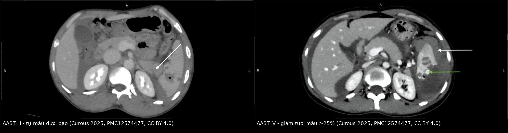
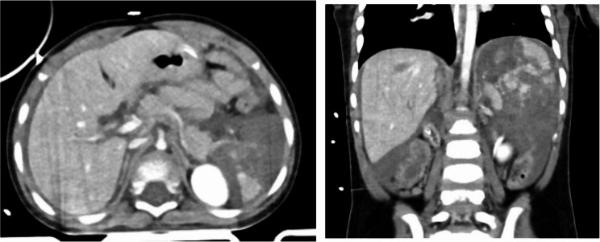

1860 — Chấn thương lách ở trẻ em: theo dõi, nút mạch hay mổ / Pediatric blunt splenic injury
Tags: pattern:vo-tang pattern:tu-mau pattern:thoat-mach pattern:gia-phinh vung:lach vung:o-bung protocol:CT-bung-co-can-quang score:AAST-OIS incidentaloma:khong
Mức chắc chắn (certainty): tổng hợp y văn (literature synthesis) — dựa trên hướng dẫn WSES 2017 (PMC5562999) và đồng thuận WSES 2022 về theo dõi sau điều trị nội (PMC9560023), tổng quan hệ thống APSA 2019 (PMID 30773395), phân độ AAST-OIS 2018 (Kozar 2018, PMID 30462622), đoàn hệ quốc gia Nhật 230 ca (PMID 32800601), mô hình dự báo giả phình muộn trên 434 ca nhi (PMC12249224), 1.043 ca chấn thương tạng đặc nhi (PMC13459630), và loạt 107 trẻ có thoát cản quang (PMID 15185236). Các câu "nên làm" không có thử nghiệm ngẫu nhiên được ghi rõ là suy luận thực hành.
Câu chốt: Ở trẻ, độ AAST KHÔNG quyết định mổ — huyết động mới quyết định. Ba con số cần nhớ: (1) điều trị nội (non-operative management, NOM) thành công 95–100% ở trung tâm nhi, thất bại chỉ 2–5% và 72,5% thất bại xảy ra trong tuần đầu (50% trong 3–5 ngày); (2) thoát cản quang (contrast blush) ở trẻ không phải chỉ định mổ/nút mạch — chỉ 9,7% trẻ có blush, 4/5 ca theo dõi thành công, không có vỡ lách muộn (PMID 15185236); (3) giả phình ĐM lách xuất hiện muộn ở 9,4% (41/434 ca nhi) nên chụp lại trước xuất viện có giá trị hơn chụp ngay.
1. Tổng quan bệnh học – cơ chế hình ảnh (TẠI SAO)
1.1 Vì sao lách trẻ dễ vỡ nhưng cũng dễ cứu
- Lách là tạng đặc bị thương thường gặp nhất trong chấn thương bụng kín ở trẻ: 25–30% các tổn thương tạng đặc (WSES 2017, PMC5562999).
- Lồng ngực trẻ đàn hồi nên lực tác động truyền thẳng vào ổ bụng mà không cần gãy xương sườn: trẻ có thể vỡ lách nặng với X-quang ngực bình thường. Đây là lý do cơ chế té ngã/tai nạn xe đạp ở trẻ nhỏ hay gây rách nhu mô hơn là vỡ xương sườn.
- Vì sao trẻ cứu lách tốt hơn người lớn: bao lách dày hơn, tỷ lệ tế bào cơ biểu mô (myoepithelial cell) cao hơn, và động mạch trong lách co thắt – rút lại hiệu quả hơn → cầm máu tự nhiên tốt hơn (WSES 2017). Vì vậy cắt lách ở trẻ ổn định là sai lầm: trẻ đã cắt lách mất chức năng miễn dịch suốt đời.
- Thể tích máu nhỏ là con dao hai lưỡi: trẻ có ~80 mL/kg (non tháng 95, đủ tháng 85, nhũ nhi 80, trẻ lớn 70) → trẻ 20 kg chỉ có ~1.600 mL. Mất 300 mL đã là ~19% thể tích tuần hoàn. Nhưng vì mạch co bù trừ tốt, huyết áp chỉ tụt khi đã mất > 45% thể tích tuần hoàn (WSES 2017) — nên huyết áp bình thường không loại trừ mất máu nặng.
- Ngưỡng huyết áp theo tuổi (ATLS): giới hạn dưới huyết áp tâm thu = 70 + 2 × tuổi (mmHg) ở trẻ 1–10 tuổi; trẻ > 10 tuổi dùng ngưỡng 90 mmHg. Trẻ 5 tuổi: 80 mmHg là giới hạn dưới.
- Nhịp tim nhanh là dấu sớm, tụt huyết áp là dấu muộn. Trong chấn thương sọ não kèm theo, nhịp tim và huyết áp đều là dấu hiệu kém tin cậy của sốc mất máu (WSES 2017) — phải dựa vào thời gian làm đầy mao mạch, tri giác, nước tiểu, lactate.
1.2 Vì sao tổn thương trông như vậy trên CT (vật lý HU)
- Nhu mô lách ngấm thuốc thì tĩnh mạch cửa: ~90–120 HU. Dịch/máu trong đường rách 10–30 HU → đường rách hiện là dải giảm đậm độ cắt qua nhu mô sáng.
- Tụ máu dưới bao (subcapsular hematoma): máu đông 50–80 HU, dạng liềm (crescent) ép nhu mô vào trong, bờ ngoài ôm sát bao lách — khác dịch tự do quanh lách (meniscus, không ép nhu mô).
- Thoát cản quang hoạt động (active extravasation): ổ ≥ 90–130 HU, gần bằng độ đậm động mạch kề bên, to ra hoặc giữ nguyên ở thì muộn. Đây là máu đang chảy ra khỏi lòng mạch, không phải cục máu đông.
- Giả phình (pseudoaneurysm) / rò động–tĩnh mạch (AV fistula): ổ tròn ngấm thuốc song song với động mạch ở thì động mạch, không nhỏ đi ở thì muộn; giả phình có thể huyết khối tự phát rồi tái thông.
- Dấu cục máu lính gác (sentinel clot sign): cục máu đông sát nguồn chảy có đậm độ cao nhất (~60–90 HU) so với máu loãng trong ổ bụng (~30–45 HU) → giúp truy nguồn chảy khi có máu ở nhiều khoang. Nguyên lý: hemoglobin càng cô đặc thì càng cản tia.
- Vì sao tổn thương mạch nâng độ: từ AAST-OIS 2018, bất kỳ tổn thương mạch lách nào (giả phình, rò ĐTM, chảy máu khu trú trong bao) đã là độ IV; chảy máu lan ra phúc mạc là độ V. Lý do: nhóm này có nguy cơ can thiệp (nút mạch/cắt lách) cao hơn hẳn.
1.3 Diễn tiến tự nhiên: khi nào thất bại, khi nào giả phình
- NOM thất bại 2–5%; tỷ lệ thất bại đạt đỉnh ở giờ thứ 4 rồi giảm dần đến giờ 36; 72,5% ca thất bại xảy ra trong tuần đầu, 50% trong 3–5 ngày (WSES 2017).
- Vỡ lách muộn 0,2% và nang giả sau chấn thương 0,3%, hầu hết trong 3 tuần đầu (WSES 2017) — đây là cơ sở cho hạn chế vận động, không phải cho nằm bất động kéo dài.
- Giả phình muộn: trong 434 ca nhi điều trị nội, 9,4% (41 ca) hình thành giả phình không thấy trên CT nhập viện, phát hiện ≥ 24 giờ sau vào viện; mô hình dự báo gồm tuổi, giới, ISS, độ AAST, thoát cản quang, tổn thương phối hợp, liều cryoprecipitate đạt AUC 0,805–0,828 (PMC12249224). Ý nghĩa: một CT nhập viện âm tính không kết thúc câu chuyện.
- Thất bại NOM không phải vì bệnh nhân "đi lại sớm": vận động sớm không làm tăng thất bại ở cả độ thấp và cao; thất bại chủ yếu do giả phình/rò ĐTM tiến triển (đồng thuận WSES 2022, PMC9560023).
2. Mẫu hình + chẩn đoán phân biệt theo vị trí (gamut)
2.1 Năm mẫu hình phải gọi tên trên CT
- Liềm tụ máu dưới bao — dải giảm đậm độ ôm mặt ngoài, ép nhu mô; không có đường rách xuyên nhu mô.
- Tụ máu trong nhu mô — ổ tròn/oval giảm đậm độ trong lách, bờ không đều; đo đường kính lớn nhất (< 5 cm = độ II; ≥ 5 cm = độ III).
- Đường rách (laceration) — dải giảm đậm độ tuyến tính xuyên nhu mô; đo độ sâu: < 1 cm (I), 1–3 cm (II), > 3 cm (III).
- Tổn thương mạch — blush khu trú trong bao (IV); giả phình/rò ĐTM (IV); blush lan ra phúc mạc (V).
- Lách vỡ nát (shattered spleen) — nhu mô mất liên tục nhiều mảnh, không còn hình lách (V).
2.2 Gamut theo vị trí và bối cảnh
- Dịch quanh lách ở trẻ có chấn thương: máu (đậm độ cao, 30–45 HU với máu loãng, 60–90 HU với cục) là chính; nhưng phải loại dịch cổ trướng sẵn có (xơ gan, thận nhiễm mỡ) và nước tiểu/dịch tụy (đậm độ thấp, bối cảnh khác).
- Đau hạ sườn trái + khối: vỡ lách · tụ máu thận trái · tổn thương đuôi tụy · vỡ cơ hoành trái · tụ máu tuyến thượng thận (sơ sinh) · nhồi máu lách (bệnh hồng cầu hình liềm, EBV, sốt rét) · xoắn lách lạc chỗ (wandering spleen).
- Theo tuổi — thay đổi ngưỡng nghi ngờ:
- Sơ sinh: chấn thương sinh (đẻ khó, hút giác) → tụ máu thượng thận và vỡ lách có thể chỉ biểu hiện sốc + bụng chướng; siêu âm đầu tay.
- Nhũ nhi – mẫu giáo: té ngã trong nhà; luôn cân nhắc chấn thương do hành hạ (non-accidental trauma) khi cơ chế không khớp tổn thương, tổn thương tạng đặc + vết bầm cũ.
- Trẻ lớn – vị thành niên: xe đạp (tay lái đâm hạ sườn trái), thể thao, tai nạn giao thông. Trên 15 tuổi xử trí theo phác đồ người lớn (WSES).
- Tổn thương phối hợp phải chủ động tìm: đuôi tụy (amylase/lipase, đau tăng sau 24–48 giờ), thận trái, ruột non/mạc treo (CT có thể bỏ sót), xương sườn dưới, cột sống ngực–thắt lưng.
3. Bảng so sánh phân biệt (ma trận đối chiếu)
| Thực thể (entity) | Hình ảnh điển hình (CT có cản quang) | Chốt vào (rule-in) | Chốt loại (rule-out) | Gợi ý xác nhận |
|---|---|---|---|---|
| AAST I–II (tổn thương nhu mô nhẹ) | Liềm dưới bao < 10% hoặc 10–50% diện tích; tụ máu trong nhu mô < 5 cm; rách < 1 cm hoặc 1–3 cm | Rách nông, không có mạch, không blush | Có giả phình/blush khu trú → tự động ≥ IV (AAST 2018) | Đo độ sâu rách (mm), đo đường kính tụ máu |
| AAST III (nhu mô nặng, chưa tổn thương mạch) | Tụ máu dưới bao > 50% hoặc vỡ bao; tụ máu trong nhu mô ≥ 5 cm; rách > 3 cm | Rách > 3 cm / tụ máu ≥ 5 cm mà KHÔNG có mạch | Có giảm tưới máu > 25% hoặc mạch → IV | Đo trên thì tĩnh mạch cửa; dựng MPR |
| AAST IV (tổn thương mạch khu trú) | Giả phình, rò ĐTM, blush trong bao lách, hoặc giảm tưới máu > 25% | Bất kỳ tổn thương mạch nào khu trú trong lách | Blush lan ra phúc mạc → V; không thấy mạch nhưng tụ máu lớn đơn thuần → III | CTA/CT thì muộn 60–90 giây; theo dõi giả phình muộn |
| AAST V (vỡ nát / chảy máu tự do) | Lách vỡ nhiều mảnh, mất hình lách; blush lan vào phúc mạc; đứt cuống mạch | Nhu mô không còn liên tục + máu tự do | Còn nhu mô lành chiếm ưu thế → IV | Không cần phân độ thêm: xử trí theo huyết động |
| Tụ máu dưới bao đơn thuần | Liềm giảm đậm độ ép nhu mô, bờ ngoài sát bao | Liềm + ép nhu mô + không có dịch quanh lách | Dịch quanh lách không ép nhu mô = máu tự do | Đo độ dày liềm; so thì trước/sau |
| Khe lách (splenic cleft) — biến thể | Đường giảm đậm độ bờ nhẵn, chạy từ rốn lách, mạch máu đi qua, không có máu quanh lách | Bờ nhẵn + mạch xuyên qua + không dịch quanh lách | Bờ nham nhở + máu quanh lách + đau khu trú = rách thật | So phim cũ nếu có; siêu âm Doppler |
| Nhồi máu lách (không chấn thương) | Vùng hình nêm giảm ngấm thuốc ở ngoại vi, không có đường rách, không máu quanh lách | Hình nêm + bệnh nền (hồng cầu hình liềm, EBV, thuyên tắc) + không máu quanh lách | Có máu quanh lách + cơ chế chấn thương = vỡ lách | Siêu âm Doppler; CT thì muộn |
| Tổn thương thận trái / đuôi tụy | Ổ giảm đậm độ trong thận hoặc trước thận, lách nguyên | Tổn thương nằm ngoài bao lách, lách ngấm thuốc đều | Đường rách xuyên nhu mô lách = tổn thương lách | Amylase/lipase; CT thì muộn; MRCP nếu nghi tụy |

Trái: AAST III — tụ máu dưới bao lớn (mũi tên trắng), nhu mô còn ngấm thuốc, không có tổn thương mạch. Phải: AAST IV — vùng nhu mô giảm tưới máu (mũi tên trắng) kèm ổ tăng đậm độ trong vùng rách (mũi tên xanh), tức tổn thương mạch. Cả hai là người lớn (35 tuổi và 31 tuổi) — dùng để học phân độ, không đại diện cho trẻ. Nguồn: Cureus 2025 (PMC12574477), CC BY 4.0; ghép bằngtools/make_composite.py (letterbox, không crop/kéo giãn).
4. Protocol chụp + hệ phân độ và thuật toán xử trí
4.1 Chụp gì, khi nào
- CT bụng–chậu có cản quang là tiêu chuẩn vàng ở trẻ huyết động ổn định (WSES GoR 1A); trẻ phải hợp tác hoặc được an thần.
- Thì chụp: thì động mạch + tĩnh mạch cửa (hoặc split-bolus gộp hai thì) để thấy mạch và nhu mô; thì muộn 60–90 giây khi nghi blush/giả phình. Lát ≤ 1–2 mm, dựng MPR coronal/sagittal để đo độ sâu rách.
- Liều: dùng protocol liều thấp 3–6 mSv thay vì 11–24 mSv (WSES 2017) — trẻ nhạy cảm bức xạ hơn người lớn nhiều lần; chi tiết liều ở bài 937.
- Siêu âm (FAST): độ nhạy chỉ ~66% (dao động 50–92%) trong meta-analysis → FAST âm không loại trừ; FAST dương ở trẻ ổn định phải chuyển CT (GoR 1B). FAST có giá trị nhất ở trẻ không chụp CT được vì huyết động không ổn.
- X-quang ngực: theo ATLS; tìm tràn khí/tràn máu màng phổi, gãy sườn (nhưng thiếu gãy sườn không loại trừ vỡ lách).
4.2 Phân độ AAST-OIS 2018 (Kozar 2018)
| Độ | Tiêu chuẩn hình ảnh |
|---|---|
| I | Tụ máu dưới bao < 10% diện tích; rách < 1 cm; rách bao |
| II | Tụ máu dưới bao 10–50%; tụ máu trong nhu mô < 5 cm; rách 1–3 cm |
| III | Tụ máu dưới bao > 50% hoặc đang lan; tụ máu trong nhu mô ≥ 5 cm; rách > 3 cm |
| IV | Tổn thương mạch lách (giả phình, rò ĐTM) hoặc chảy máu khu trú trong bao; rách mạch phân thùy/rốn gây giảm tưới máu > 25% |
| V | Lách vỡ nát; tổn thương mạch rốn làm mất tưới máu lách; chảy máu lan vào phúc mạc |
Quy tắc 2018: có nhiều tổn thương riêng biệt thì tăng 1 độ, nhưng không vượt quá độ III (trừ khi có tổn thương mạch — khi đó đã là IV).
4.3 Xử trí: huyết động trước, độ AAST sau
- NOM là lựa chọn đầu tay cho trẻ chấn thương lách kín huyết động ổn định, bất kể độ AAST (WSES GoR 2A; EAST). Không cắt lách ở trẻ ổn định có tổn thương lách đơn độc (GoR 1A).
- Chống chỉ định NOM: viêm phúc mạc, ruột lòi, vật xuyên còn lại, hoặc chỉ định mở bụng khác (GoR 2A).
- Hồi sức: 3 lần 20 mL/kg dịch tinh thể trước khi truyền máu; truyền máu theo tỷ lệ 1:1:1 khi sốc mất máu; ngưỡng truyền hồng cầu khối Hb < 7 g/dL (WSES). Mổ khi đã truyền ≥ 40 mL/kg chế phẩm máu trong 24 giờ mà vẫn không ổn định (ATOMAC, dẫn qua WSES).
- Blush trên CT ở trẻ: KHÔNG tự động can thiệp (GoR 2B). Loạt 107 trẻ: blush 9,7% (5/63 có CT), 4/5 theo dõi thành công, không ca nào vỡ lách muộn (PMID 15185236).
- Nút mạch (splenic artery embolization, SAE) khi: trẻ đã chọn NOM nhưng chảy máu dai dẳng/đáp ứng tạm thời với hồi sức, đã loại nguồn chảy ngoài lách (GoR 1C); hoặc giả phình tồn tại trước xuất viện (GoR 2C). Ở đoàn hệ Nhật 230 ca độ cao, SAE được dùng 27%, mổ 5,2%, không có tử vong, cứu lách 97% (PMID 32800601).
- Biến chứng SAE ở trẻ: hội chứng sau nút mạch 90% (đau, buồn nôn, liệt ruột, sốt), tự hết sau 6–9 ngày; tràn dịch màng phổi 9%, viêm phổi 9%, di trú coil 4,5% (WSES 2017). Đừng nhầm sốt sau nút mạch với nhiễm trùng.
- Theo dõi sau NOM (đồng thuận WSES 2022): đo Hb mỗi 8 giờ; cho vận động khi 3 lần Hb liên tiếp chênh nhau < 10%; chụp lại (CT/CEUS) 48–72 giờ với độ III trở lên; dự phòng huyết khối bằng LMWH sau 48–72 giờ nếu không có chống chỉ định. (Các khuyến cáo này chủ yếu từ người lớn — áp dụng cho trẻ cần cá thể hóa.)
- Thời gian nằm viện: APSA 2000 đề nghị LOS = độ + 1 ngày và hạn chế vận động = độ + 2 tuần; tổng quan APSA 2019 cho rằng LOS nên theo lâm sàng, có thể ngắn hơn, và không nút mạch dự phòng ở trẻ ổn định có thoát mạch trên hình. Một loạt 156 trẻ tổn thương tạng đặc đơn độc: LOS thực tế 2,85 ± 3,32 ngày so với 3,71 ± 0,98 ngày nếu theo công thức APSA (PMID 37257502).
- Trở lại hoạt động mạnh: ít nhất 6 tuần với tổn thương trung bình–nặng (WSES GoR 2B); không cần nằm bất động kéo dài.
- Nếu phải cắt lách: tiêm phòng phế cầu, Haemophilus influenzae type b, não mô cầu (GoR 1A), không sớm hơn 14 ngày sau mổ (GoR 2C); OPSI 0,5–2%, tử vong 30–70%, nguy cơ cao nhất năm đầu và kéo dài suốt đời (chi tiết ở bài 6173 nếu có).
flowchart TD
A["Chấn thương bụng kín ở trẻ, nghi vỡ lách"] --> B{"Huyết động ổn định?"}
B -->|"Không"| C["Hồi sức 20 mL/kg x3 + máu 1:1:1; FAST tại giường"]
C --> D["Mổ bụng cấp cứu nếu không ổn định"]
B -->|"Có"| E["CT bụng–chậu có cản quang, lát ≤ 2 mm"]
E --> F{"Xếp độ AAST 2018 + có tổn thương mạch?"}
F -->|"Không có mạch"| G["NOM: theo dõi, Hb mỗi 8 giờ"]
F -->|"Blush khu trú hoặc giả phình"| H{"Blush đơn thuần hay giả phình tồn tại?"}
H -->|"Blush đơn thuần"| G
H -->|"Giả phình trước xuất viện"| I["Cân nhắc SAE"]
G --> J{"Hb giảm hoặc không ổn định?"}
J -->|"Có"| K["SAE hoặc mổ"]
J -->|"Không"| L["Ăn được, đau kiểm soát: xuất viện; hạn chế vận động độ + 2 tuần"]
5. Biến thể bình thường và cạm bẫy
- Khe lách (splenic cleft) — biến thể hay bị gọi là rách: bờ nhẵn, chạy từ rốn ra ngoại vi, mạch máu đi trong khe, không có máu quanh lách, không đau khu trú tương ứng. Rách thật: bờ nham nhở, máu quanh lách, đau hạ sườn trái.
- Tụ máu dưới bao vs máu tự do quanh lách: liềm dưới bao ép nhu mô và không di chuyển theo tư thế; máu tự do tạo meniscus trong khoang màng phổi/ổ bụng, không ép nhu mô, đậm độ thấp hơn.
- Cạm bẫy "đọc độ mà quên trẻ": trẻ độ IV–V vẫn có thể điều trị nội nếu ổn định; ngược lại trẻ độ II có thể tụt huyết áp vì mất máu nhanh. Quyết định theo huyết động + xu hướng Hb, không theo con số độ.
- Blush không đồng nghĩa mổ (ở trẻ): khác người lớn, blush đơn thuần ở trẻ thường tự cầm; can thiệp khi chảy máu dai dẳng hoặc giả phình tồn tại.
- Giả phình xuất hiện MUỘN: CT nhập viện âm tính không loại trừ; 9,4% trẻ hình thành giả phình sau đó (PMC12249224). Phải chụp lại trước xuất viện ở độ III trở lên, hoặc khi Hb không ổn định.
- "Bụng mềm" ở trẻ không đáng tin: trẻ bù trừ tốt, dấu bụng ngoại vi xuất hiện muộn; theo dõi nhịp tim, làm đầy mao mạch, nước tiểu, lactate.
- Bỏ sót tổn thương phối hợp (satisfaction of search): thấy vỡ lách rồi dừng lại — phải soát đuôi tụy, thận trái, ruột non, xương sườn dưới, cột sống. Đau tăng sau 24–48 giờ + amylase/lipase tăng = nghĩ tụy.
- Bức xạ lặp lại: chỉ chụp lại khi Hb giảm, đau tăng, hoặc theo lịch 48–72 giờ ở độ cao; tránh chuỗi CT "cho chắc" ở trẻ.
- Chấn thương do hành hạ: cơ chế không khớp với tổn thương, trẻ < 2 tuổi, tổn thương tạng đặc + vết bầm ở nhiều lứa tuổi → báo cáo theo quy trình bảo vệ trẻ, không chỉ điều trị lách.
- Sau cắt lách: thể lách lạc (splenosis) có thể xuất hiện nhiều năm sau, dạng nốt màng phổi/phúc mạc — đừng gọi là di căn.
6. Tự lượng giá — Blind Quiz
Ca 1 — Bé trai 2 tuổi, chấn thương bụng kín, bụng chướng, huyết động còn ổn định sau hồi sức.

- Câu hỏi: Mô tả tổn thương lách (axial trái, coronal phải)? Xếp độ AAST? Nếu trẻ ổn định, bước tiếp theo là gì?
Bấm để hiện đáp án (findings + chẩn đoán)
- Dấu hiệu: nhu mô lách mất liên tục gần như toàn bộ, nhiều đường rách và máu tụ lớn trong bao/thay thế nhu mô; coronal cho thấy lách không còn hình dạng bình thường, đẩy các tạng xung quanh.
- Chẩn đoán: vỡ lách độ V (shattered spleen) theo AAST-OIS 2018.
- Xử trí: độ V không tự động là chỉ định mổ. Trẻ huyết động ổn định → NOM tại trung tâm có khả năng theo dõi liên tục, nút mạch và mổ ngay; theo dõi Hb mỗi 8 giờ, chụp lại 48–72 giờ. Nếu không ổn định hoặc chảy máu dai dẳng → SAE hoặc mổ (cố gắng bảo tồn một phần lách).
- Nguồn ảnh: BMC Surgery 2026 (PMC13459630), Fig. 1 — CC BY-NC-ND 4.0, dùng nguyên bản, không crop/ghép.
Ca 2 — Nam 33 tuổi, tai nạn giao thông, đau hạ sườn trái; CT có cản quang thì tĩnh mạch cửa.

- Câu hỏi: Mũi tên xanh và dấu hoa thị chỉ gì? Vì sao tổn thương này không phải độ III? Khác biệt xử trí ở người lớn và trẻ?
Bấm để hiện đáp án (findings + chẩn đoán)
- Dấu hiệu: dấu hoa thị = tụ máu/đường rách trong nhu mô; mũi tên xanh = ổ tăng đậm độ trong vùng rách, đậm độ gần bằng động mạch → thoát cản quang hoạt động (active extravasation).
- Chẩn đoán: AAST IV — vì có tổn thương mạch; từ 2018, bất kỳ tổn thương mạch nào cũng nâng lên độ IV (chảy máu lan ra phúc mạc = độ V).
- Xử trí khác nhau: ở người lớn, blush thường là chỉ định chụp mạch/nút mạch; ở trẻ, blush đơn thuần không tự động can thiệp — chỉ nút khi chảy máu dai dẳng/đáp ứng tạm thời hoặc giả phình tồn tại.
- Nguồn ảnh: Cureus 2025 (PMC12574477), Fig. 3 — CC BY 4.0.
Ca 3 — Hai bệnh nhân, cùng CT bụng có cản quang: hãy xếp độ trước khi mở đáp án.
- Câu hỏi: Ảnh trái và ảnh phải khác nhau ở dấu hiệu nào quyết định độ? Ảnh nào có tổn thương mạch?
Bấm để hiện đáp án (findings + chẩn đoán)
- Ảnh trái — AAST III: tụ máu dưới bao lớn (mũi tên trắng), nhu mô còn ngấm thuốc; không thấy giả phình/blush → độ III vì tụ máu > 50% diện tích (không phải vì mạch).
- Ảnh phải — AAST IV: vùng giảm tưới máu (mũi tên trắng) kèm ổ tăng đậm độ trong vùng rách (mũi tên xanh) = tổn thương mạch; đây là dấu hiệu nâng độ IV, không phải kích thước tụ máu.
- Bài học: độ do mạch quyết định, không do lượng máu tụ; đo độ sâu rách và tìm giả phình/blush trước khi kết luận.
- Nguồn ảnh: Cureus 2025 (PMC12574477), Fig. 4 và Fig. 7 — CC BY 4.0; ghép bằng
tools/make_composite.py.
Bài liên quan chéo
- 600 – Tổng quan hệ Nhi khoa
- 1848 – Nút mạch lách trong chấn thương (người lớn) (kỹ thuật nút gần/xa, cứu lách 90,3%)
- 1835 – Thiếu máu ruột sau nút mạch (biến chứng của SAE)
- 937 – Liều CT ở trẻ: SSDE, DRL (ALARA khi chụp lặp)
- 6115 – Tăng áp cửa trái do huyết khối tĩnh mạch lách (di chứng muộn trên cùng tạng)
Ảnh
images/1860_chan-thuong-lach_CT_PMC13459630.jpg— trẻ 2 tuổi, vỡ lách độ V; BMC Surgery 2026 (PMC13459630), CC BY-NC-ND 4.0.images/1860_chan-thuong-lach_CT_PMC12574477-f3.jpg— người lớn, độ IV + thoát cản quang; Cureus 2025 (PMC12574477), CC BY 4.0.images/1860_chan-thuong-lach_CT_PMC12574477-f4.jpgvà-f7.jpg— nguồn của ảnh ghép; cùng bài, CC BY 4.0.images/composite_1860_AAST-III-IV.jpg— ảnh ghép đối chiếu độ III vs IV; tạo bằngtools/make_composite.py(letterbox nền đen, không crop/kéo giãn).- Nguồn + giấy phép từng ảnh:
images/CREDITS.md; link gốc:sources.md.
Không dùng để chẩn đoán độc lập khi chưa có người hướng dẫn.